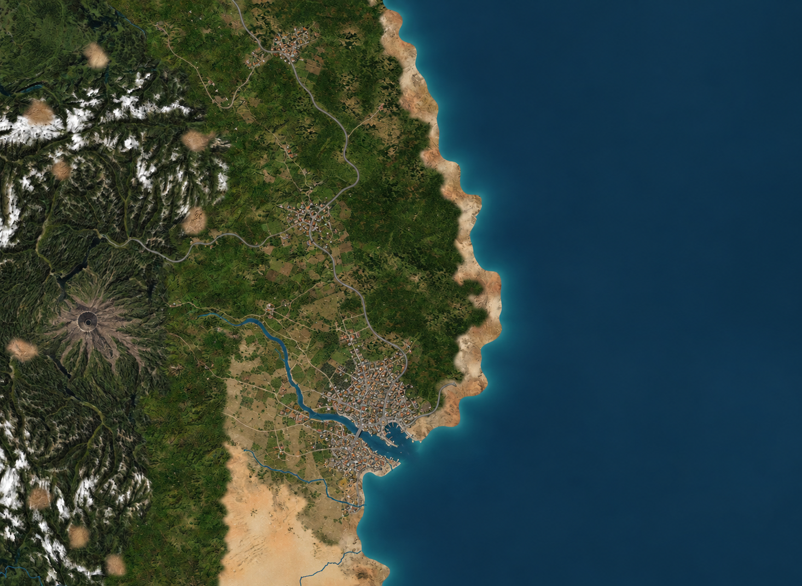
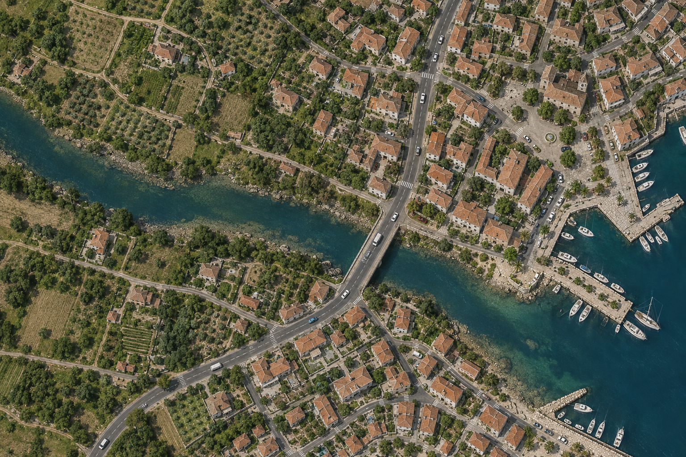

01 / Settlements
City hexes with organic edges.
Small roofs and connected streets form irregular neighbourhoods. Gardens, fields and scattered houses soften the edges where urban areas meet the terrain.
Cities, roads and volcanic peaks sharing one natural landscape.

REGIONAL OVERVIEWSmall roofs and connected streets form irregular neighbourhoods. Gardens, fields and scattered houses soften the edges where urban areas meet the terrain.
Weathered stone, radial gullies and green foothills use the same palette as the surrounding range. The summit shape identifies the volcano.
Asphalt, shoulders and bridges follow the terrain. Cars have roof shapes, glazing and small shadows; their detail becomes visible when viewing streets up close.

Separate close-up concept illustrating the intended materials and scale, rather than a crop of the regional map.